Rhyflitzer – Map Madness
Pressematerial. Alle Bilder und Videos dürfen für Berichte über das Spiel frei verwendet werden. Press kit: all images and videos may be used freely in coverage of the game.
Kurz
- Was
- Ein offenes Autospiel im Browser nach dem Vorbild von „Midtown Madness“ (1999): Man fährt frei durch Sisseln, das Sisslerfeld, Stein und Bad Säckingen, nachgebaut aus offenen Geodaten.
- Spielen
- rhyflitzer.ch, kostenlos, ohne Installation, auch auf dem Handy. Kurzlink für Leserinnen und Leser: rhyflitzer.ch/nfz
- Von
- Andreas Imboden, Sisseln, zusammen mit seiner Tochter. Weitere Spiele: freax.games
- Seit
- Ende September 2026, privates und nicht-kommerzielles Projekt
- Kontakt
- kontakt@rhyflitzer.ch
Videos
YouTube-Playlist „Rhyflitzer – Map Madness“
Plattform Sisslerfeld

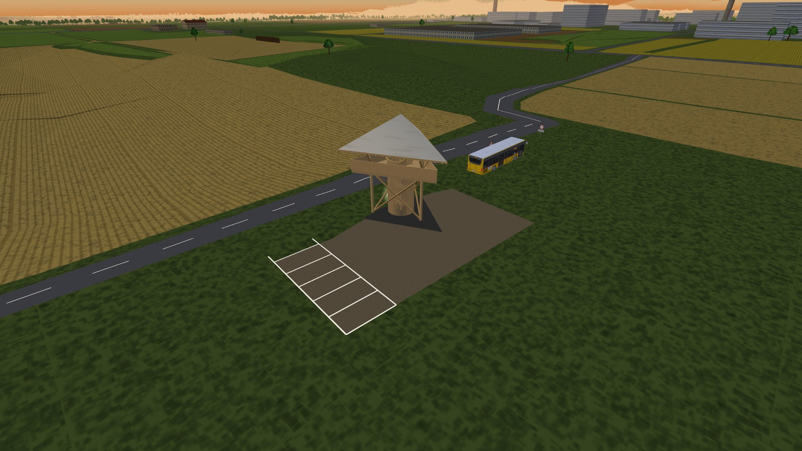
Herunterladen (3840×2160)

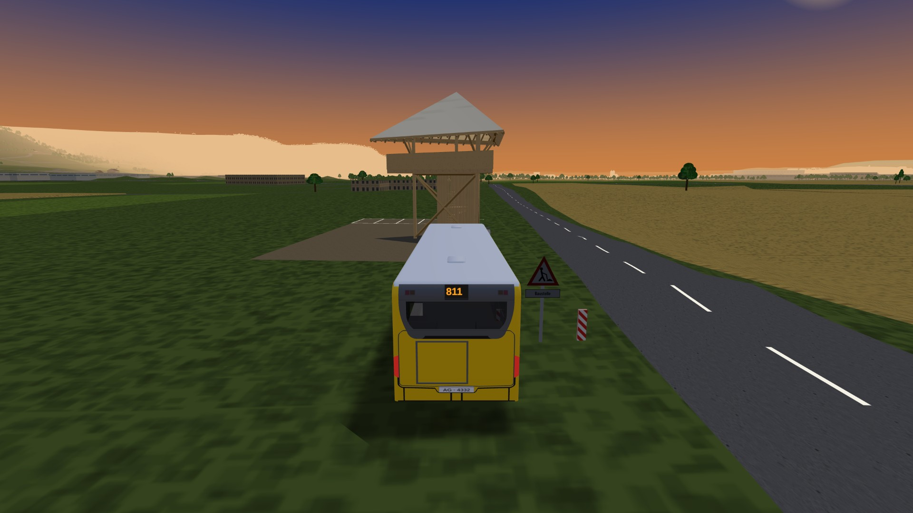
Herunterladen (3840×2160)

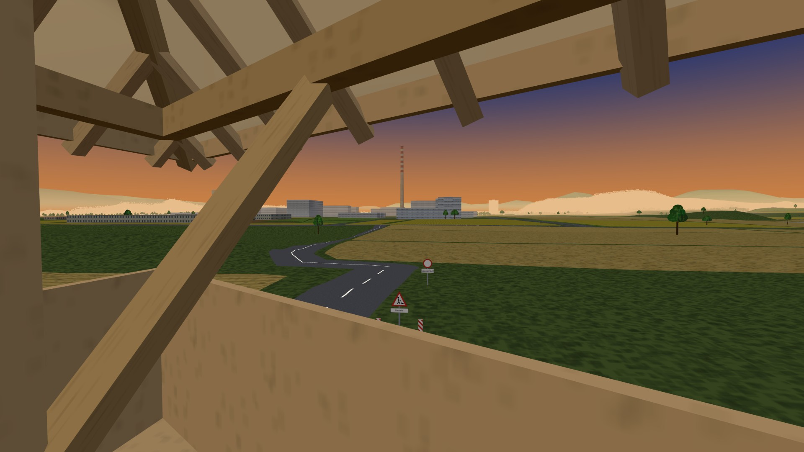
Herunterladen (3840×2160)

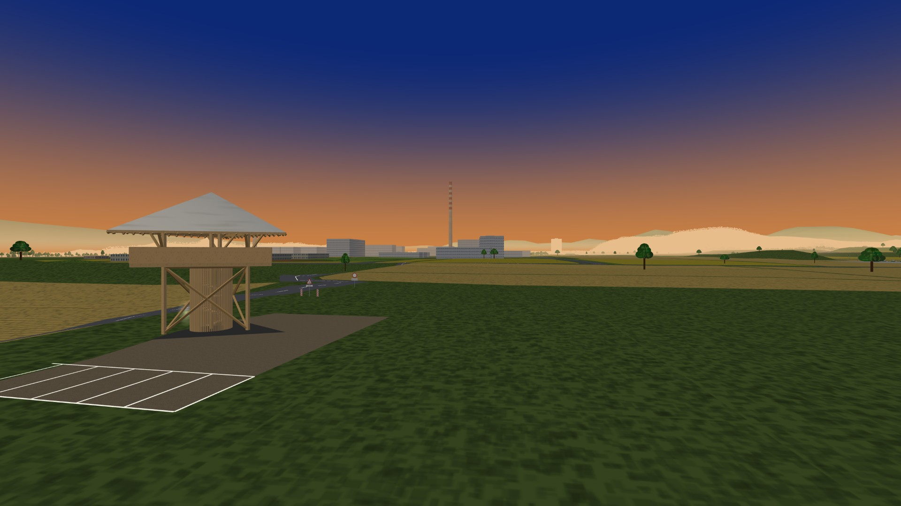
Herunterladen (3840×2160)
Weitere Bilder

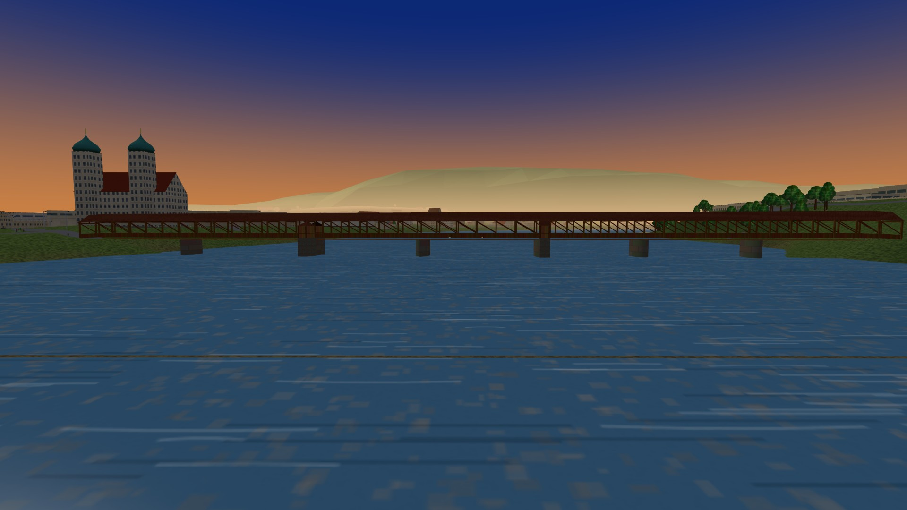
Herunterladen (3840×2160)

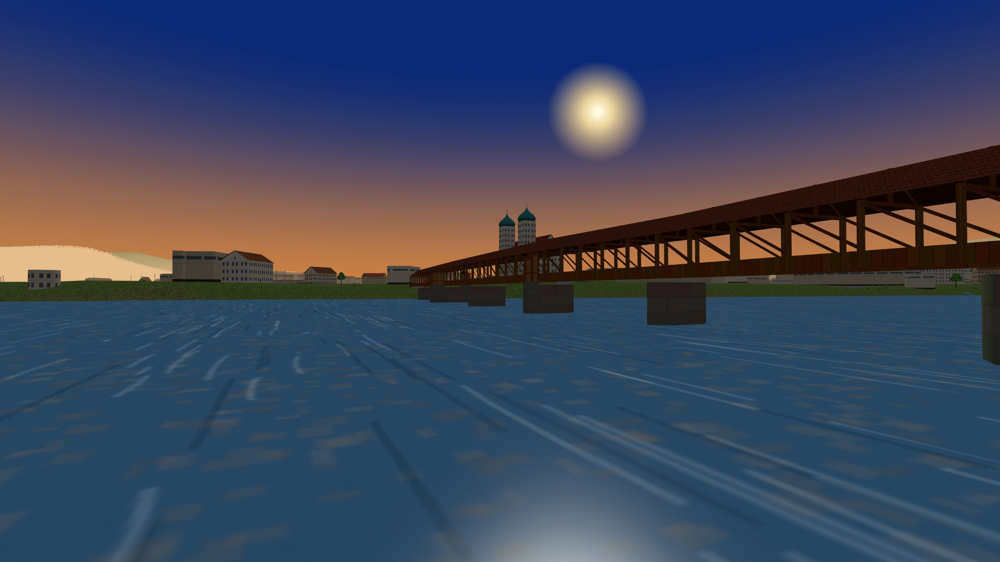
Herunterladen (3840×2160)

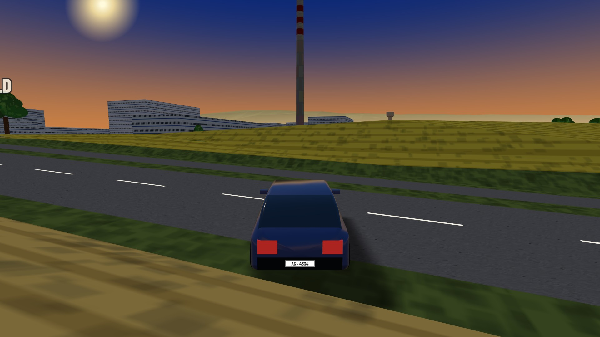
Herunterladen (3840×2160)

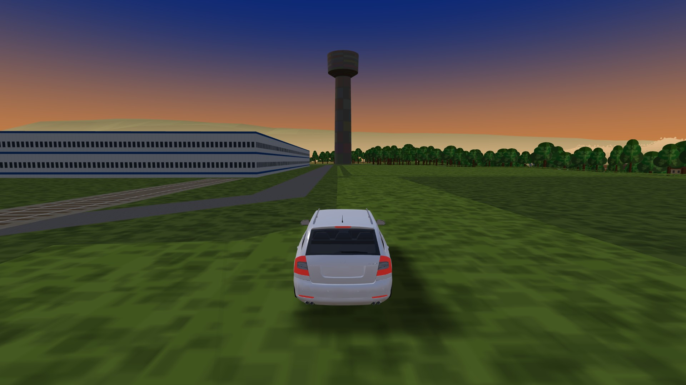
Herunterladen (3840×2160)

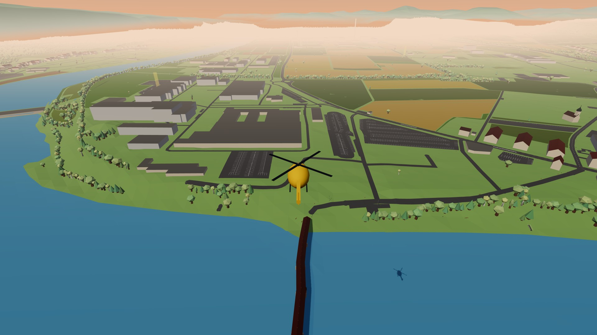
Herunterladen (3840×2160)

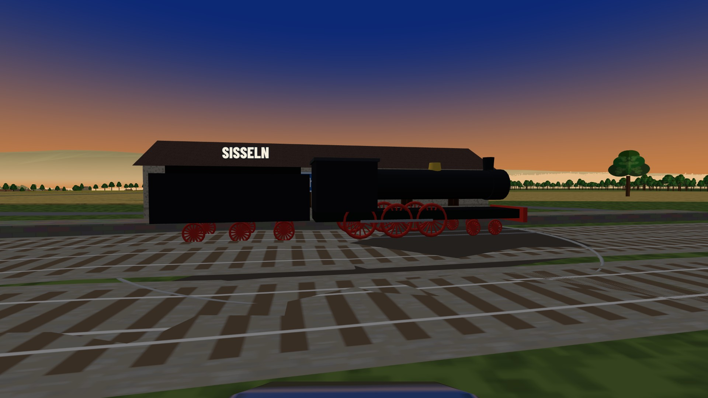
Herunterladen (3840×2160)

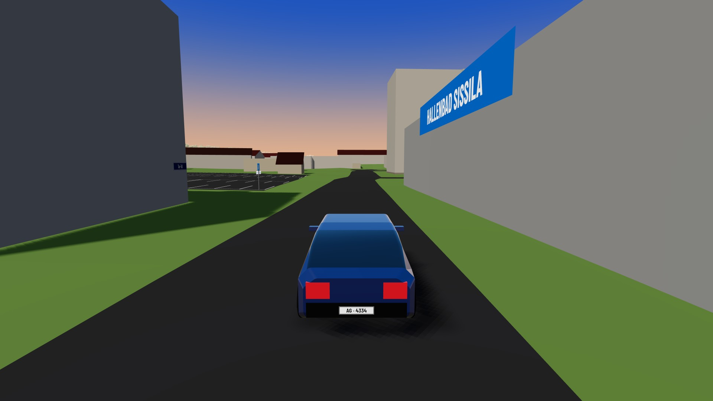
Herunterladen (3840×2160)

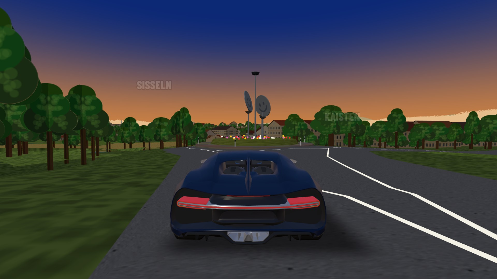
Herunterladen (3840×2160)

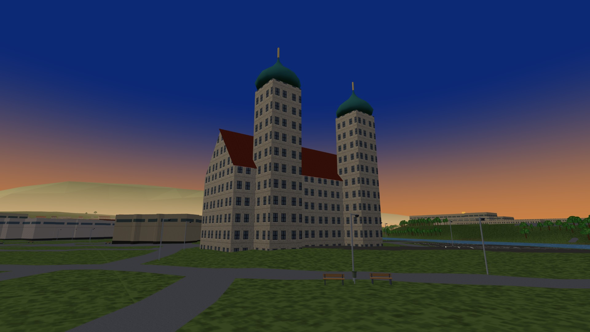
Herunterladen (3840×2160)
Bildnachweis
Bilder: Rhyflitzer (zVg.). Die Landschaft im Spiel beruht auf Daten von © OpenStreetMap-Mitwirkende, © swisstopo und LGL Baden-Württemberg.